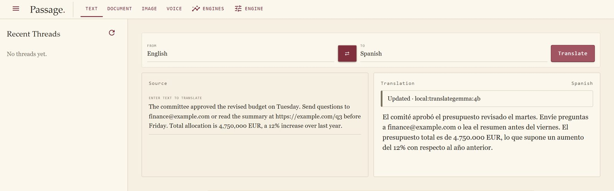
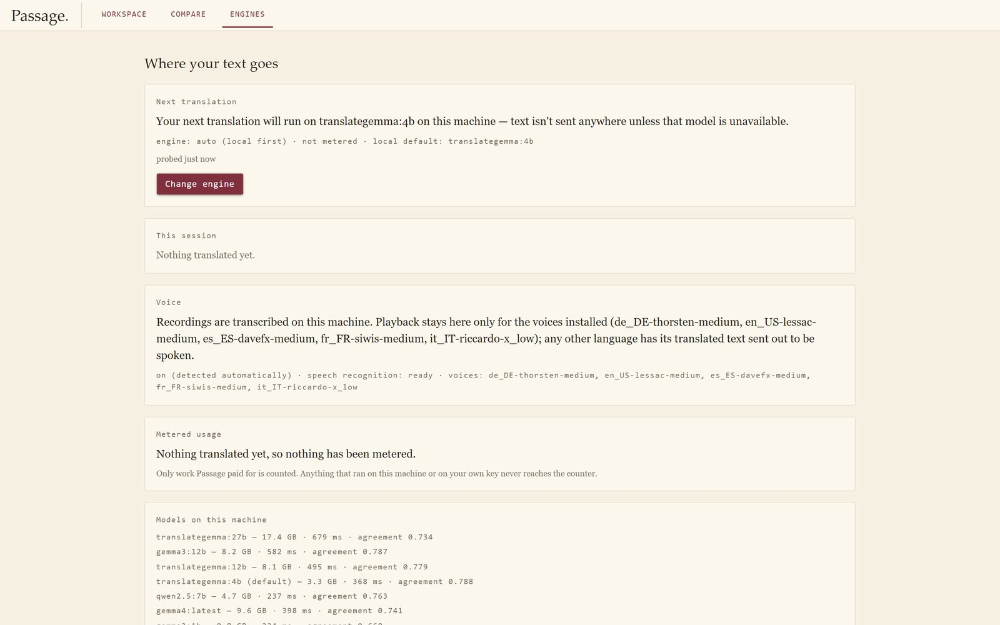
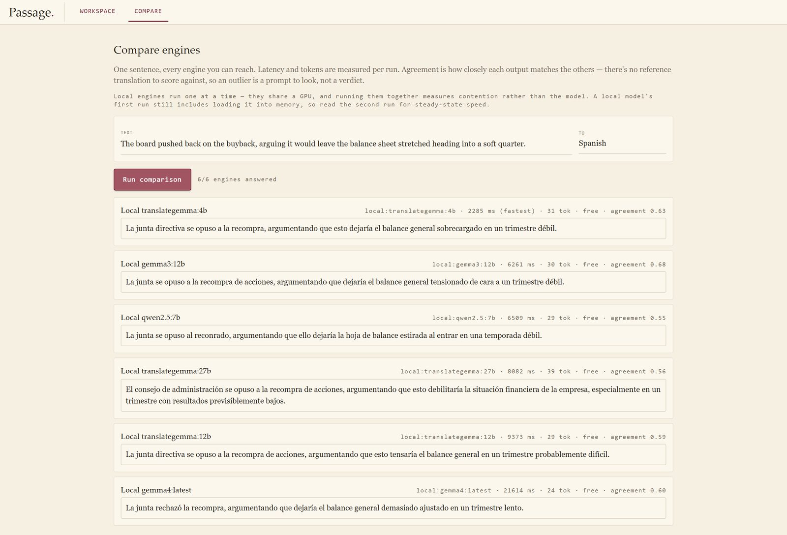

Text. One request, one answer, and the engine that served it named above the result.
One request, end to end
This is the workspace with a real translation in it. English to Spanish, served by translategemma:4b running on this machine, which is what the badge above the result says. Nothing about that sentence left the room.

local:translategemma:4b, so a private run is distinguishable from a hosted one without trusting a capability probe.A prompt is not a mechanism. Every model invariant in this codebase is enforced by masking, routing or validation, and the test asserts the mechanism rather than the wording. That rule came out of a measurement rather than a preference, and it is the one thing from this project I have reused everywhere since. The full write-up is how a 4B model beat a 27B.
Where your text goes
Most translation tools answer “is this private?” with a policy page. Passage answers it with the run: it resolves what this host can actually reach, says what the next request will use, and counts only the work it paid for.

Six engines, one sentence
The compare view sends the same sentence to every engine it can reach and reports latency, tokens and agreement side by side. Agreement is how closely the outputs match each other, not how good any of them is: there is no reference translation here, so an outlier is a prompt to look rather than a verdict.

| Engine | Latency | Tokens | Agreement |
|---|---|---|---|
| translategemma:4b | 2,285 ms | 31 | 0.63 |
| gemma3:12b | 6,261 ms | 30 | 0.68 |
| qwen2.5:7b | 6,509 ms | 29 | 0.55 |
| translategemma:27b | 8,082 ms | 39 | 0.56 |
| translategemma:12b | 9,373 ms | 29 | 0.59 |
| gemma4:latest | 21,614 ms | 24 | 0.60 |
The 4B answered in a quarter of the time the 27B took, on the same sentence and the same card, and it is the default here for that reason rather than because it is the largest thing available. The quality measurement reached the same conclusion from the other direction.
What it deliberately does not do
- No accounts and no billing. The sign-in layer is written, live-tested, and deliberately unwired.
- No durable storage of what you upload. A document keeps its segments and edit history, because that is the reviewable value. The uploaded file itself is storage, exposure and a deletion obligation without adding product, so it is not kept.
- No claim of quality it cannot support. Agreement is not accuracy, and the page says so where the number appears.
Where it came from
This began as an internal tool: a Python web app that translated PowerPoint decks, documents and PDFs for teams who were paying an agency to do the same work. It cut turnaround by about 95% with an error rate under 5%, at a fraction of the agency cost. This repository is not that tool. It is the rebuild, around a question the original never asked: where did this text actually go?